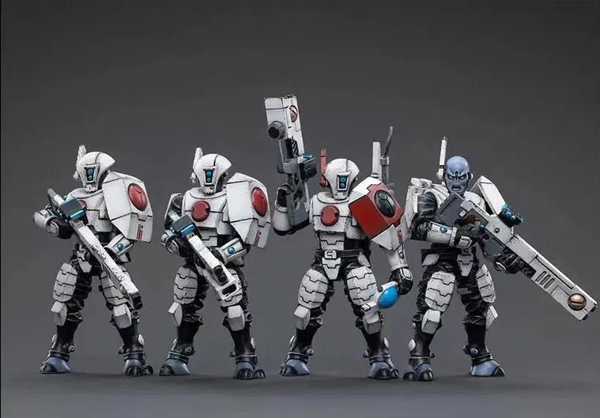

Tau
Icono del Imperio Tau
El Imperio T'au (pronunciado "TOW" como en "WOW"), también escrito Imperio Tau en registros imperiales más antiguos, es un imperio estelar xenos multiespecie en rápida expansión situado dentro del Imperio del Ultima Segmentum del Hombre, cerca de la Franja Oriental del Galaxia de la Vía Láctea. Se encuentra al alcance del Astronomican.
El Imperio T'au fue fundado por la casta T'au llamada los Etéreos, quienes lideran el Imperio T'au en nombre y de acuerdo con la filosofía utilitaria que han denominado el "Bien Mayor" (Tau'va en el T'au). 'au Lexicon). Un número grande y creciente de otras razas alienígenas inteligentes se han aliado con los T'au dentro del imperio.
El imperio ha sufrido muchas incursiones de los Orkos, y también parece encontrarse en el camino de varias flotas escindidas tiránidas de la Flota Enjambre Kraken.
Los T'au (clasificación binomial imperial: Tau tau), también escritos "Tau" en registros imperiales más antiguos, son una especie inteligente joven, humanoide y tecnológicamente avanzada, nativa de la franja oriental de la Vía Láctea. Están luchando por expandir su pequeño, pero de rápido crecimiento, imperio interestelar y extender un concepto filosófico que llaman el "Bien Mayor" a todas las especies inteligentes de la galaxia.
Los T'au afirman ser una especie pacífica cuando es posible y preguntan si otros se unirán a su causa voluntariamente en lugar de luchar contra ellos. Sin embargo, si sus propuestas pacíficas son rechazadas, los T'au bien pueden decidir conquistar un planeta y agregarlo a su creciente imperio estelar para el Bien Mayor, arrancando la carne de los huesos de cualquiera que se oponga a sus benignas intenciones.
La sociedad T'au está dividida en varias castas, cada una de las cuales es responsable de gestionar un aspecto específico de su civilización. El ideal motivador central de los T'au es que todos en su imperio, independientemente de su especie o cultura de origen, trabajarán para el mejoramiento colectivo de todos los demás, una filosofía casi mística que se encarna en el Bien Mayor.
Tau sin casco
Equipo de Tau
